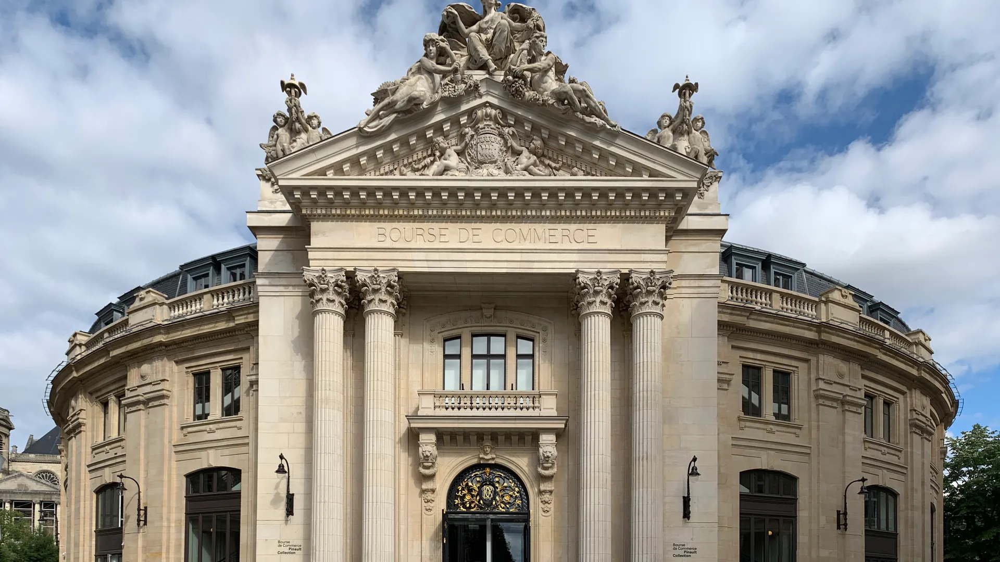

_-_2021-06-05_-_1.jpg){kind=link}
관광·미술관
Nous avons déjà des billets.
이미 표가 있습니다.
누 자봉 데자 데 비예

레 알(Les Halles) 지구와 루브르 박물관 사이에 자리 잡은 18세기 원형 곡물거래소(Halle aux blés)를 세계적인 일본 건축가 안도 다다오(Tadao Ando)가 혁신적으로 재해석한 현대미술관이다.
프랑스의 대표적인 명품 그룹 케링(Kering)의 창립자이자 세계 최대의 현대미술 컬렉터 중 한 명인 프랑수아 피노(François Pinault)가 자신의 방대한 개인 소장품을 대중에게 선보이기 위해 2021년 개관했다.
1889년 파리 만국박람회 당시 돔 천장 아래 그려진 높이 10m, 둘레 140m의 장대한 무역 역사 파노라마 프레스코화 한가운데에, 안도 다다오의 시그니처인 높이 9m, 지름 29m의 매끄러운 원통형 노출 콘크리트 벽(Cylinder)을 대담하게 삽입하여 18세기 고전 건축과 21세기 미니멀리즘이 숨 막히는 대화를 나눈다.
"원형 돔 천장에서 쏟아지는 자연광과 거대한 노출 콘크리트 실린더가 빚어내는 공간의 웅장함, 그리고 피노 컬렉션의 도발적이고 감각적인 동시대 현대미술을 가장 세련된 공간에서 만나는 특별한 건축적 체험이다." 중앙 실린더 안뜰을 둘러보고 나선형 계단을 따라 2층과 3층 갤러리를 순회하는 60~75분 코스로 적합하다.
| 운영시간 | 월–일 11:00–19:00 · 금요일 21:00까지 · 매월 첫 토요일 17:00–21:00 무료 야간 |
|---|---|
| 휴무 | 화요일 (+5/1) |
| 요금 | €15 |
| 메모 | 2026/8/26–10/5 전시 준비 기간 · 'Remember Me' 10/7 개막 → 방문 가능일은 10/7·10/8 |
| 항목 | 상세 정보 |
|---|---|
| 위치 | 2 Rue de Viarmes, 75001 Paris |
| 운영 시간 | 수요일–월요일 11:00–19:00 (금요일 야간 21:00까지 연장 개방) / 매주 화요일 휴관 |
| 입장료 | 일반 성인 €15.00 (18–26세 €10.00, 18세 미만 무료) / 매월 첫째 주 토요일 17:00–21:00 무료 야간 개방 (사전 예약 필수) |
| 사전 온라인 예매 (권장) | 공식 웹사이트(pinaultcollection.com)에서 시간 지정 예매 권장 |
| 교통 접근 | 메트로 1/4/7/11/14호선 & RER A/B/D선 Châtelet - Les Halles역 도보 3분, 메트로 1호선 Louvre - Rivoli역 도보 4분 |
Nous avons déjà des billets.
이미 표가 있습니다.
누 자봉 데자 데 비예
On peut prendre des photos ?
사진 찍어도 되나요?
옹 푀 프랑드르 데 포토
Où commence la visite ?
관람은 어디서 시작하나요?
우 코망스 라 비지트

1868년 앙리 라브루스트가 주철 기둥과 9개 도자기 돔으로 완성한 19세기 건축의 걸작 '라브루스트 열람실'과 일반에 전면 무료 개방된 거대한 타원형 '오발 열람실(Salle Ovale)', 프랑스 국립도서관 박물관.

렌조 피아노와 리처드 로저스가 건물 배관과 골격을 외벽으로 노출시킨 20세기 하이테크 건축의 전설이자 유럽 최대 근현대미술관. ⚠ 2025년 가을부터 2030년까지 전면 개보수 공사로 본관 폐관 중.

클로드 모네가 43년간 직접 꽃과 연못을 가꾸며 불후의 『수련』 대작을 창조해낸 살아있는 인상파 캔버스. 초록색 일본식 다리가 걸린 '물의 정원(Jardin d'eau)'과 핑크빛 모네 생가 아틀리에.

1900년 파리 만국박람회를 위해 건립된 45m 높이 아르누보 철골 유리 네이브(Nave)의 기념비적 국립 전시장. 2024 파리 올림픽을 거쳐 리노베이션 완료 후 재개관한 파리 문화 예술의 중심지.

중세 소르본 대학 교수와 학생들이 공용어로 라틴어를 쓰던 데서 유래한 800년 파리 지성의 요람이자 센 강 좌안(Rive Gauche)의 심장. 프랑스 위인들의 성소 팡테옹(Panthéon), 셰익스피어 앤 컴퍼니, 뤽상부르 공원.

17세기 귀족 저택(Hôtel particulier), 파리에서 가장 오래된 대칭 광장 보주 광장(Place des Vosges), 유대인 전통 미식 로지에 거리, 북마레의 감각적인 독립 부티크와 갤러리가 공존하는 역사·트렌드 지구.